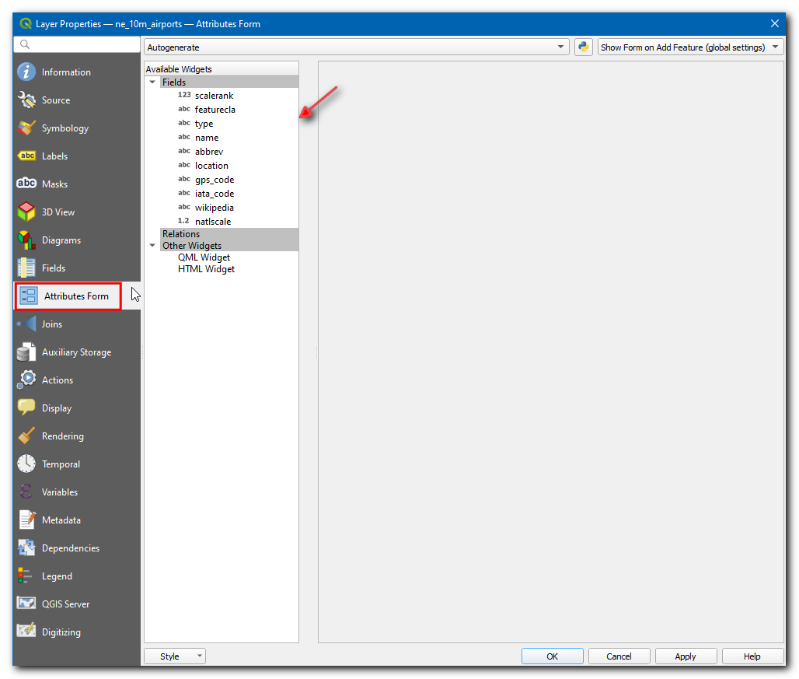

Trabajar con Datos WMS (QGIS3)¶
Usualmente necesitará capas de datos de referencia para su mapa base o para mostrar sus resultados en el contexto de otros conjuntos de datos. Muchas organizaciones publican sus conjuntos de datos en línea que están ya listos para ser usados en un SIG. Un estándar popular para la publicación de mapas en línea se llama «WMS (Web Map Service)». Este es la mejor opción para usar capas de referencia, ya que puede acceder a una serie de conjuntos de datos para su SIG sin tener que descargar o dar estilo a los datos.
Vista general de la tarea¶
En este tutorial cargaremos una capa WMS de `Expansión Urbana hasta el 2030 `_ publicada por el Centro de Datos y Aplicaciones Socioeconómicos (SEDAC, https://sedac.ciesin.columbia.edu/data/set/lulc-global-grid-prob-urban-expansion-2030).
Otras habilidades que aprenderá¶
Como ajustar la transparencia de una capa y añadir un widget deslizador de control de opacidad en QGIS.
Obtener los Datos¶
Visite el Global Grid of Probabilities of Urban Expansion by SEDAC ` (https://sedac.ciesin.columbia.edu/data/set/lulc-global-grid-prob-urban-expansion-2030)_, estos datos contienen pronósticos probabilísticos de cambio de cobertura de la tierra urbana del 2000 al 2030 en una resolución de 2,5 minutos de arco. Clic en :guilabel:`Servicios de Mapa.

Copie la URL de servicio WMS. Esta es la URL al servicio WMS que hospeda la capa de datos.

Procedimiento¶
Abra QGIS y clic en Abrir Administrador de Fuente de Datos.

En la caja de diálogo Administrador de fuentes de datos cámbiese a WMS/WMTS, clic Nuevo.

In the Create a New WMS/WMTS Connection dialog box under Connection Details enter the Name as
SEDAC, and paste the copied URL in URL textbox. Click OK. If you get an error with the copied URL, try with the alternate URLhttps://sedac.ciesin.columbia.edu/geoserver/ows.
Nota
Está creando una nueva conexión a un servicio WMS - no una capa específica. Un servicio único por lo general ofrece múltiples capas que pueden ser añadidas a tu proyecto.
Ahora en la caja de diálogo Administrador de fuentes de datos, clic Conectar. Todas las capa disponibles serán cargadas. Notará diferentes IDs listados junto a las capas. el ID
0significa que obtienes un mapa de todas las capas. Si no necesitas todas las capas, puedes expandir la lista haciendo clic en el icono ▸ y seleccionando la capa de interés.
Para este tutorial estamos interesados en una capa específica. Busque
Probabilities of Urban Expansion to 2030. Seleccione la versión default de la capa de expansión urbana 2030.
En la sección Codificación necesita elegir un formato de imagen. El formato de imagen es importante, y depende del caso de uso. En base a la perspectiva de usuario aquí van algunas sugerencias,
Calidad: La compresión de archivo para un PNG es sin pérdidas, para JPEG es con pérdidas y TIFF puede ser ambos. Esto significa que la calidad de las imágenes PNG será mejor comparada a las JPEG. Si su principal objetivo es imprimir un mapa, use PNG.
Rapidez: Como las imágenes PNG son menos comprimidas y por eso tienen un mayor tamaño, toman mayor tiempo en cargar. Si en su proyecto está usando la capa como una capa de referencia y necesita hacer mucho acercamiento o moverse, use JPEG.
Soporte de clientes: QGIS admite la mayoría de los formatos, pero si está desarrollando aplicaciones web, los navegadores generalmente no admiten TIFF, así que debería elegir otro formato.
Tipo de datos: Si sus capas son principalmente vectoriales, PNG le dará mejores resultados. Para capas imágenes, JPEG es por lo general una mejor elección.
Para este tutorial, elija PNG como formato. Cambie el Nombre de la capa si quiere y haga clic en Añadir.

Ahora se cargará una capa Probabilities of Urban Expansion to 2030 en el lienzo. Use las herramientas Acercar/Desplazar para explorar la capa. La manera que el servicio WMS trabaja es que cada vez que se acerca/desplaza, envía sus coordenadas de la ventana gráfica al servidor y el servidor crea una imagen para esa ventana gráfica y la devuelve al cliente. Así, habrá algo de demora antes de que vea la imagen para el área a la que se ha acercado. Por eso, siempre se requiere una conexión internet para acceder a esta capa.

Ahora, acérquese a cualquier lugar conocido y clic en el icono Identificar objetos espaciales en la barra de herramientas.

Clic en cualquier pixel en el lienzo. Aparecerá una caja de diálogo con el valor de celda. Este es el valor del pixel en la capa - que representa la probabilidad de que el pixel sea urbanizado para el 2030. Debido a que la capa no es almacenada localmente, estos valores son recuperados del proveedor de servicio. Puede ver mejor los resultados seleccionando el Formato como
HTMLy Ver comoÁrbol.
Nota
La información es recuperada por GetFeatureInfo. Es una llamada estándar WMS que nos permite recuperar información acerca de los objetos espaciales y coberturas mostradas en un mapa. Si el mapa está compuesto de varias capas, y GetFeatureInfo puede ser instruído de devolver múltiples descripciones de objetos espaciales, HTML/GeoJSON es el formato de archivo acostumbrado en el que la información es recuperada.
Para ver la información adicional acerca de la capa, clic-derecho en la capa y seleccione Propiedades….

En la caja de diálogo Propiedades de capa, cámbiese a la pestaña Información. Aquí puede encontrarse toda la información como proveedor de datos, proyección, extensión. Clic en Aceptar para cerrar la caja de diálogo después de explorar.

En QGIS Explorador, busque XYZ Tiles y clic y arrastre el
OpenStreetMapal lienzo.
Clic en el icono Abrir el panel de Estilo de Capa y cámbiese a Transparencia.

Defina la Opacidad global como
50 %
Ahora en el lienzo, la capa Urban puede ser explorada con referencia geográfica.

Para obtener más acceso a la transparencia de la capa, clic-derecho en la capa y seleccione Propiedades….

En la caja de diálogo Propiedades de capa, cámbiese a la pestaña Leyenda, bajo Widgets disponibles. Seleccione
Opacity slidery clic el icono Añadir widgets seleccionados. Clic Aceptar.
Ahora un widget control deslizante estará disponible para controlar la opacidad de la capa.

If you want to give feedback or share your experience with this tutorial, please comment below. (requires GitHub account)